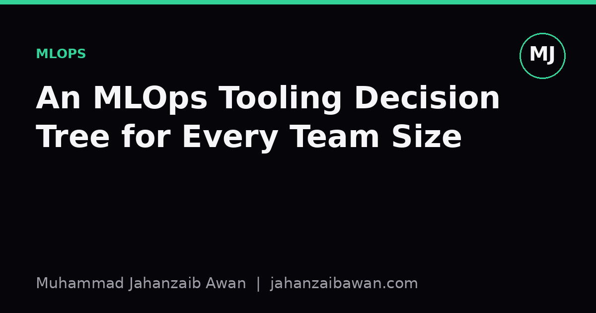

An MLOps Tooling Decision Tree for Every Team Size
The right MLOps stack is not the most popular one, it is the smallest one that matches your team's actual pain. Here is how I reason about what to adopt and when.

Why this decision gets made badly
Most MLOps tooling decisions I see are made by reading a conference talk from a company with five hundred engineers and then copying their stack for a team of two. This is backwards. Tooling has a cost in setup time, cognitive overhead, and maintenance, and that cost only pays off once the problem it solves actually exists for you. A feature store is a brilliant answer to a problem that a solo data scientist does not have yet. Adopting one early does not make you more rigorous, it just gives you another system to babysit.
The sane way to decide is to ask what failure mode you are currently exposed to, not what tool is trending. A decision tree built around team size is a reasonable proxy because team size correlates strongly with the failure modes that actually bite: at one person, the risk is forgetting what you did; at ten people, the risk is silent duplication and inconsistent environments; at fifty, the risk is production drift nobody notices until a complaint arrives. I will walk through four rough stages and the reasoning at each one, not just a shopping list.
Stage one: a single person or a pair
At this size, the dominant risk is not infrastructure, it is memory. You will run thirty variations of a model over a few weeks and six months later you will not remember which preprocessing script produced the checkpoint that actually worked. The fix here is cheap and almost entirely about discipline rather than tooling: a lightweight experiment tracker that logs parameters, metrics, and a pointer to the exact code version and data snapshot used. That is the whole requirement. You do not need distributed training orchestration, you do not need a model registry with approval workflows, and you almost certainly do not need Kubernetes.
Concretely, I would adopt three things: version control with disciplined commits tied to each experiment, a simple tracking tool that stores runs as structured records rather than scattered spreadsheet rows, and a fixed, versioned train or validation or test split that is written to disk once and never regenerated on the fly. That last point matters more than any tool choice. I have seen a solo researcher report a jump from 81 percent to 89 percent accuracy that turned out to be nothing more than a reshuffled split leaking similar examples across train and test. No tracking tool catches that; only a frozen, inspected split does. The reasoning: at this stage, the cost of a wrong tool is wasted hours, but the cost of a leaky evaluation is a wrong conclusion that propagates into every later decision, so evaluation hygiene is the one place where under-investing is genuinely dangerous.

Stage two: a small team of three to ten
Now the failure mode changes. Several people are building on shared data and shared assumptions, and the risk becomes inconsistency: two people retrain the same model with subtly different preprocessing and get different numbers, and nobody can tell which one is right because the environments differ in ways nobody wrote down. This is where I would add containerised, reproducible environments and a shared, append-only experiment tracking system that the whole team logs into, not personal notebooks. The reasoning is simple: once more than one person touches the pipeline, informal memory stops scaling, and you need an external record that does not depend on anyone's recollection.
This is also the point where a basic CI pipeline for model code earns its keep, not a full continuous training system, just automated checks that run on every pull request: does the pipeline still execute end to end on a small held-out sample, do the data schema checks pass, has anyone accidentally changed the split logic. Say your team ships a retrained model every two weeks; without this check, a schema change made for one feature can silently null out another feature for three weeks before anyone notices the metric dip, because nobody is manually re-auditing every pipeline run. A fifteen-minute CI job that asserts column types and row counts against known bounds would have caught it on day one. You still do not need a feature store at this size unless you have genuinely duplicated feature computation logic across multiple models, which is worth checking before you build one, not assuming.
Stages three and four: scaling into production, and a mature platform team
Once you have multiple models actually serving traffic, the dominant risk shifts again, this time to drift and silent degradation in production rather than mistakes in development. A model that scored well on a held-out test set six months ago can quietly decay as the input distribution shifts, and nobody notices because the only measured metric was the one-off offline evaluation. At this stage I would adopt a model registry with explicit promotion stages, automated deployment with rollback, and production monitoring that tracks input feature distributions and prediction distributions against a stored baseline, not just uptime. The reasoning: once the cost of a bad model in production is measured in real business impact rather than wasted compute, the economics flip, and the cost of the monitoring system becomes small relative to the cost of missing a 15 percent drop in precision for two months.
A feature store earns its place here too, specifically when the same engineered feature, say a rolling thirty-day average of user activity, is computed independently in both the training pipeline and the serving pipeline, and those two computations have drifted apart because one was updated and the other was not. That training-serving skew is one of the most common and hardest to debug production failures, and a feature store's main value is forcing a single source of truth for that computation, not the fancy UI around it.
At full platform maturity, with dozens of models and teams, the remaining additions are about governance and self-service: standardised templates so new models inherit tracking, monitoring, and CI for free, approval gates for high-stakes deployments, and cost and performance dashboards that let a platform team spot a model eating disproportionate compute before finance does. None of this is exciting, but it is what separates a stack that scales from one that collapses under its own tooling sprawl.
The practical takeaway: do not ask what the best MLOps stack is, ask what failure you are currently exposed to and adopt the smallest tool that removes it. Evaluation discipline and reproducible splits come first regardless of team size, because they are cheap and the alternative is believing a false result. Everything else, from registries to feature stores to elaborate monitoring, should arrive in response to a real, observed pain, not in anticipation of a scale you have not reached yet.